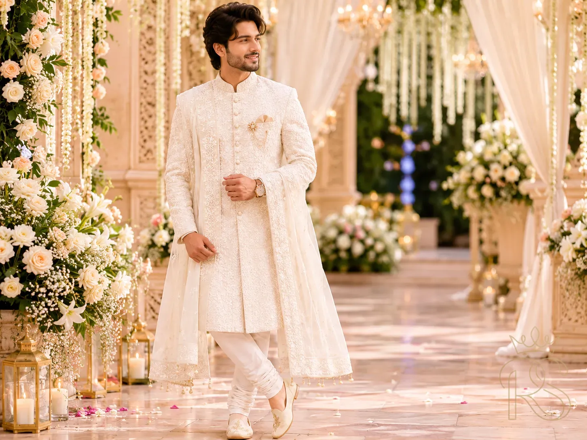
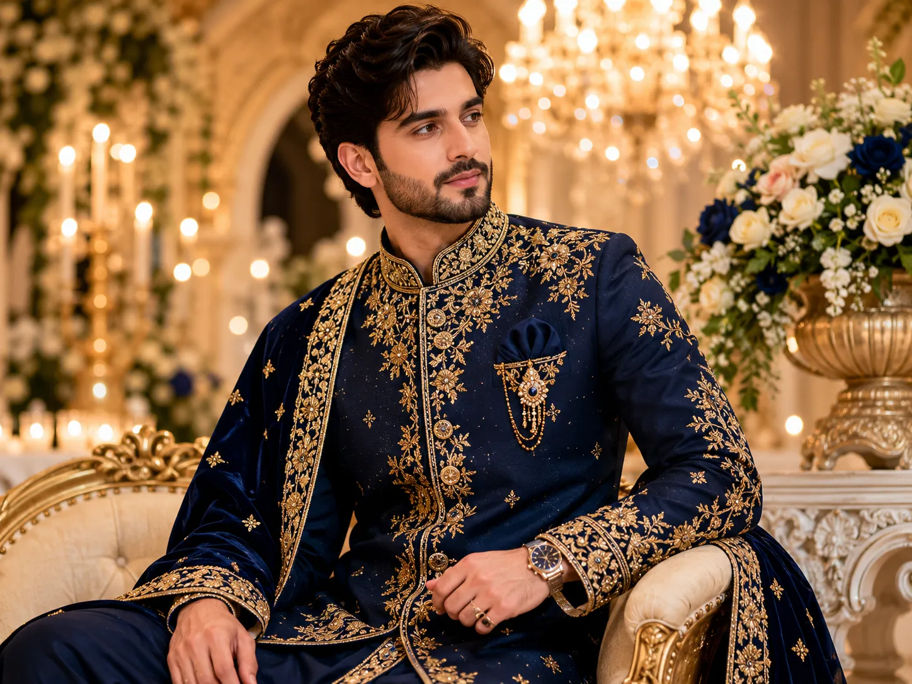
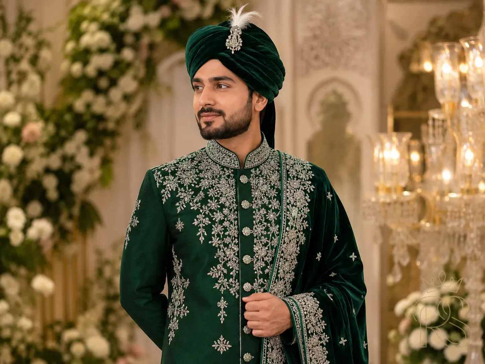
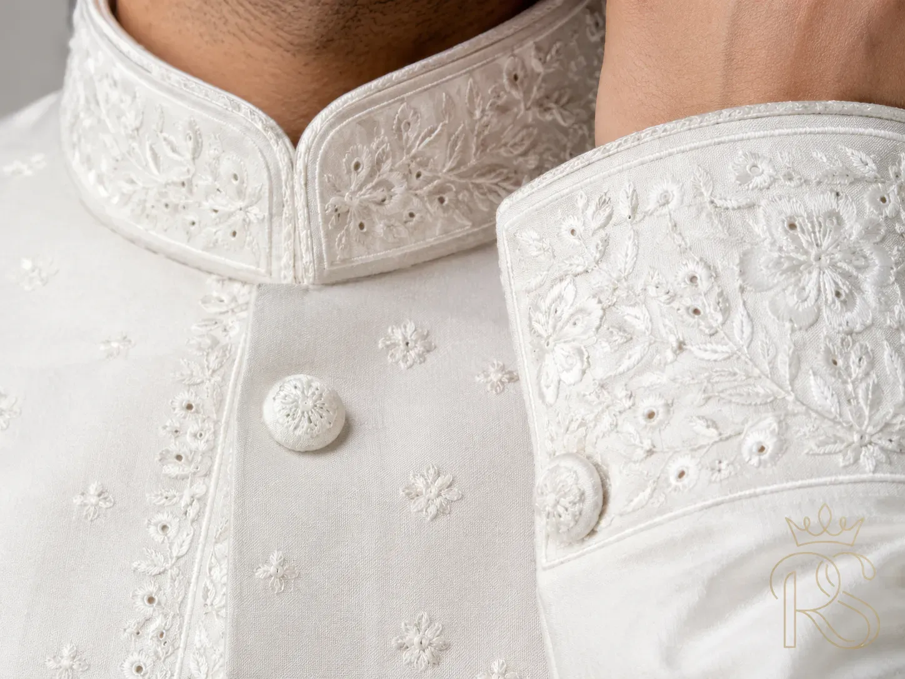
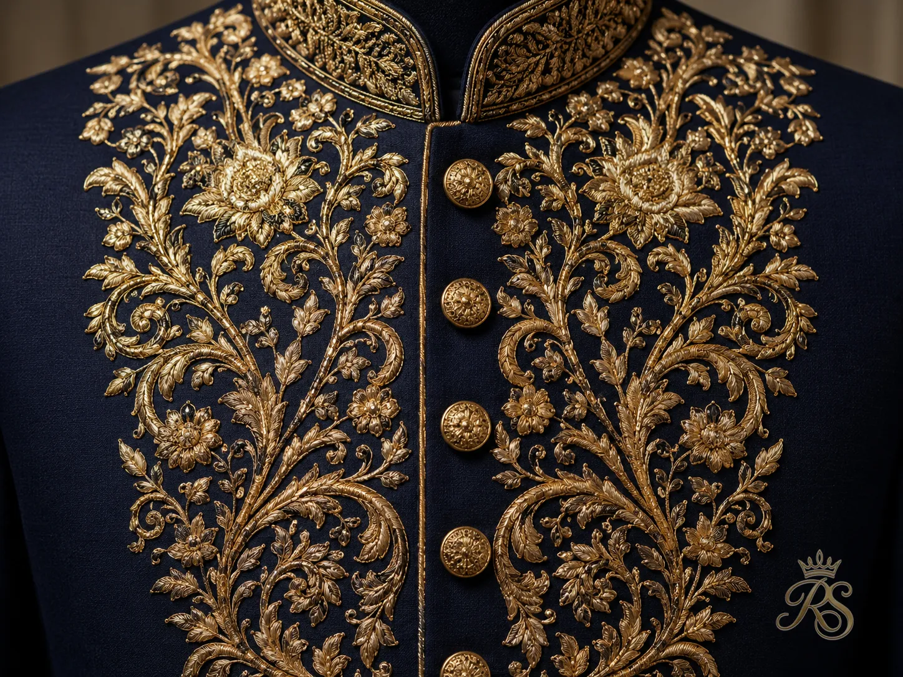
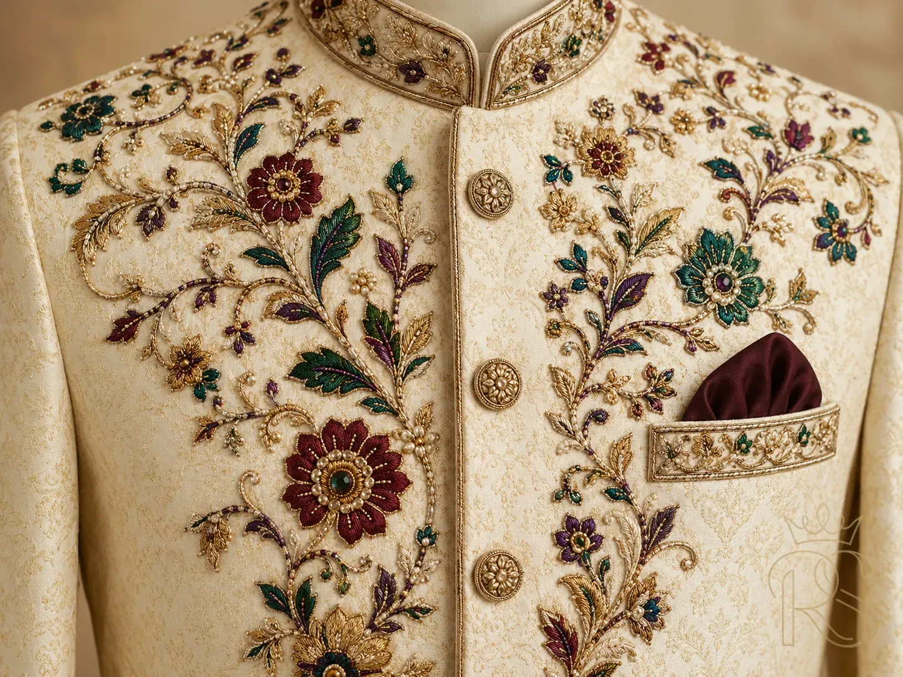
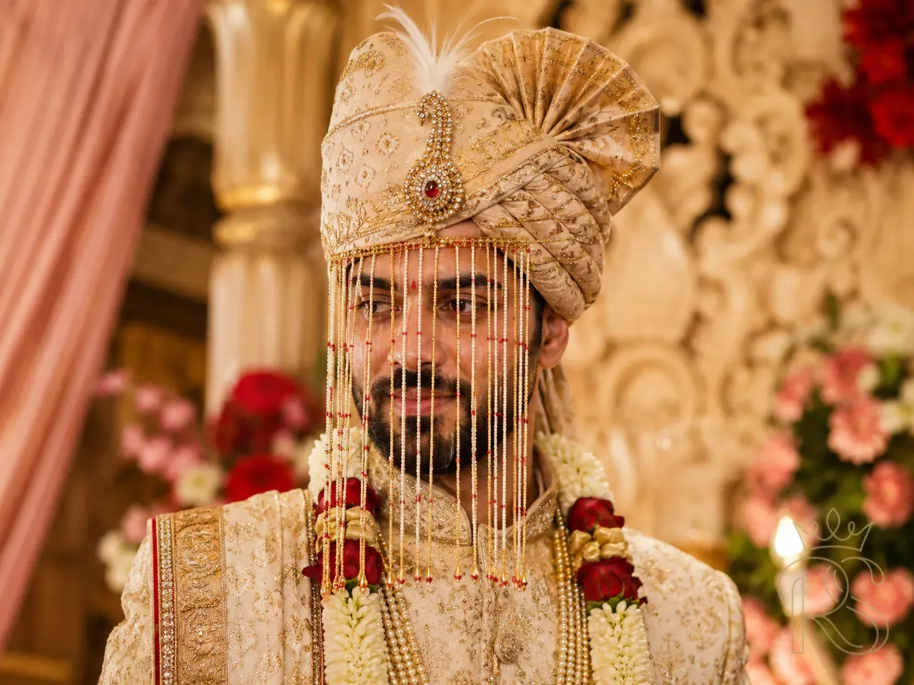
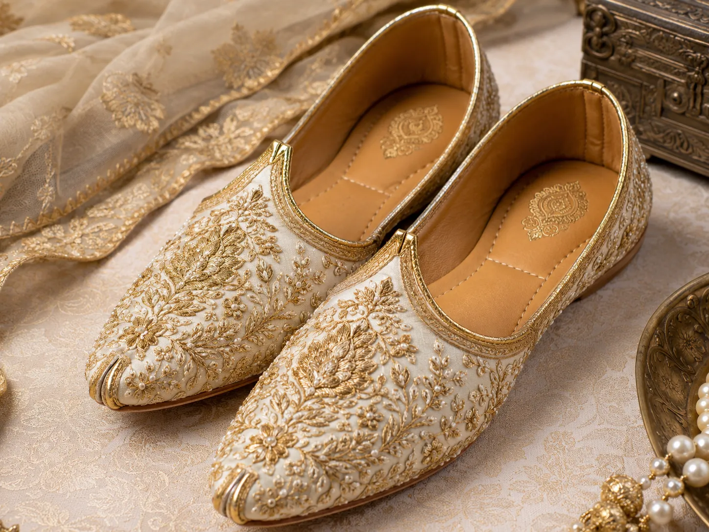

Royal Shaadi EditorialJune 18, 202614 min readGroom Fashion
The sherwani is not just a wedding outfit. It is a declaration — of heritage, of taste, of the man you are presenting to the world on the most photographed day of your life. In 2026, Indian groom fashion has never been more alive with choice: from ivory chikankari whispers to deep forest-green brocade statements, from Jodhpuri bandhgalas to experimental Indo-Western fusions. This guide cuts through the noise and shows you exactly what to wear, why it works, and how to make it entirely your own.
01
The Classic Ivory & Cream Sherwani
Timeless · Ceremony-Ready · Most Popular in 2026
IvoryCreamChikankariBandhgalaDay Wedding

Ivory chikankari remains the single most requested bridal sherwani style at premium ateliers across India in 2026.
If there is one sherwani silhouette that has defined Indian groom fashion for over a decade — and shows absolutely no sign of stepping aside — it is the ivory or cream sherwani. In 2026, it continues to dominate order books at every major atelier from Hyderabad to Delhi, and for very good reason: it is universally flattering, impossibly elegant, and photographs with a luminous quality that no darker shade can replicate.
The ivory sherwani's dominance in 2026 has been further cemented by the broader pastel trend sweeping Indian weddings. As brides move away from heavy reds toward champagne, dusty rose, and blush, grooms in ivory and cream create perfectly coordinated couple looks that feel modern, romantic, and cohesive. The visual harmony between a bride in a pastel lehenga or ivory saree and a groom in a cream sherwani has become one of the defining aesthetic signatures of the 2026 Indian wedding.
"Ivory is not the absence of colour — it is the presence of confidence. The groom who wears it knows that he does not need ornamentation to command a room."
Chikankari embroidery from Lucknow remains the most sought-after surface work on ivory sherwanis — its white-on-white shadow play creates depth without shouting, and it looks stunning in photographs whether shot in natural daylight or studio lighting. For grooms who want more visual weight, zardozi (metallic thread embroidery in silver or antique gold) along the collar, cuffs, and front placket adds ceremony-appropriate richness without overwhelming the base colour.
🪡
Style Tip: If you choose an ivory sherwani, pay extraordinary attention to your accessories. A hand-embroidered silk dupatta in a contrasting tone (deep burgundy, forest green, or royal blue) draped across one shoulder immediately elevates the look from simple to spectacular. Let the dupatta be your statement — and keep the sherwani itself clean and precise.
02
Jewel-Tone Sherwanis: Bold, Regal, Unforgettable
High Impact · Reception & Baraat · Designer Favourite
Navy BlueEmeraldBurgundyZardoziBaraat

Navy blue with gold zardozi — the most photographed jewel-tone combination of 2026

Emerald green with silver embroidery — rising sharply through 2026 as grooms reclaim bold colour
For grooms who want to make an unambiguous visual statement — particularly for the baraat, sangeet, or a dramatic evening reception — the jewel-tone sherwani is the definitive 2026 choice. Navy blue, emerald green, deep forest, royal plum, and wine burgundy have moved from "daring outliers" to mainstream premium choices, and the results speak for themselves in every lookbook this year.
The magic of a jewel-tone sherwani lies in how embroidery behaves on it. Gold zardozi on navy blue creates the regal quality of a Mughal miniature painting — every photograph looks like it belongs in an art museum. Silver thread on emerald green creates a luminous shimmer under venue lighting that is impossible to replicate on lighter fabrics. Antique gold embroidery on burgundy achieves a warmth and richness that suggests both heritage and luxury simultaneously.
62%
Of premium groom orders in 2026 chose a non-ivory, non-red colour
#1
Navy blue is the single most-searched groom sherwani colour on Royal Shaadi in 2026
3×
Increase in emerald & forest green groom outfit requests since 2024
One critical consideration with jewel-tone sherwanis: fabric quality is everything. On ivory, a lower-grade silk is forgiving. On deep navy or emerald, every texture imperfection and every uneven embroidery stitch is visible. Invest in the best raw silk, Banarasi brocade, or velvet you can access — and ensure your tailor's finishing work is immaculate. A navy sherwani in mediocre fabric looks cheap. In premium silk, it looks like royalty.
💎
Colour Coordination Tip: If your bride is wearing a pastel outfit, contrast works beautifully — pair her blush with your navy, her sage with your burgundy. If she is wearing a jewel tone, go tonal rather than identical: her deep red lehenga with your deep forest green creates a complementary palette that photographs magnificently without looking like a costume.
03
The 2026 Colour Palette: What Grooms Are Actually Wearing
Colour Trends · Season Guide
Ivory
Midnight Navy
Forest Green
Royal Plum
Warm Cognac
Burgundy
Peach Sand
Sage
Hover each swatch to expand it — the 2026 groom palette in full. Navy, forest green, and ivory lead the year.
The 2026 groom colour story can be told in three chapters. The classics endure — ivory, cream, and champagne remain the single most popular choice, particularly for daytime ceremonies and traditional Hindu or Muslim weddings where white and cream carry sacred resonance. The jewel revolution deepens — navy blue, forest green, and royal plum have consolidated their rise from 2024–25 into full mainstream status. And a quieter third story is emerging: warm earth tones — cognac, warm sand, terracotta, and peach — are gaining ground among grooms who want neither the bridal softness of ivory nor the formality of jewel tones, but something distinctly in between.
Regional preferences still shape colour choices significantly. In Punjab and Delhi, red and deep maroon retain ceremonial importance for the pheras and baraat. In South India, grooms at traditional ceremonies often wear white or off-white with gold border detailing, mirroring the dhoti-kurta heritage. At destination weddings and urban reception-heavy celebrations, the full jewel-tone palette is embraced enthusiastically across all communities.
🎨
Colour Timing Tip: Consider your ceremony time when choosing colour. Ivory and pastels are extraordinary in natural afternoon light but can look flat under harsh artificial lighting at evening receptions. Jewel tones — navy, emerald, burgundy — are specifically engineered to shine under stage and venue lighting. Many grooms wear an ivory sherwani for the ceremony and change into a jewel-tone bandhgala for the evening reception.
04
Sherwani Styles: The Complete 2026 Silhouette Guide
Silhouettes & Cuts · Know Your Options
Classic Cut
The Angrakha Sherwani
The angrakha — defined by its asymmetrical overlapping chest panel that ties at the side — is the most historically rooted sherwani silhouette. It traces its lineage to Mughal court dress and Rajput warrior garments. In 2026, it has returned powerfully as grooms seek authentic heritage styling over modern tailoring shortcuts. The diagonal front closure creates a naturally flattering line across the chest and draws the eye upward.
HeritageMughal-InspiredMost Traditional
Modern Classic
The Bandhgala Sherwani
The bandhgala (meaning "closed collar") is the sherwani silhouette most commonly associated with groom fashion in the modern era. Its Nehru-collar, fitted jacket body, and straight front button placket create a clean, structured silhouette that works equally well at ceremonies and receptions. The bandhgala is the most versatile option — dress it up with heavy embroidery or down with simple surface work depending on the occasion.
VersatileCeremony & ReceptionMost Popular 2026
Princely Heritage
The Achkan / Prince Coat
The achkan is the longest of the sherwani silhouettes — a floor-grazing coat with a fitted body and a subtle flare below the hip. It is associated with the Lucknow and Hyderabad courts and carries an undeniable aristocratic elegance. In white or ivory chikankari, it reads as effortless refinement. In a jewel tone with heavy embroidery, it is the closest thing in Indian groom fashion to a full ceremonial uniform.
Floor-LengthLucknowi HeritageChikankari Favourite
Contemporary Fusion
The Indo-Western Jodhpuri
The Jodhpuri suit (or Jodhpuri bandhgala) is a fusion silhouette — a structured jacket with a Nehru collar worn with Western-style trousers rather than churidar or dhoti. It is the groom outfit of choice for men who want the ceremony-appropriate aesthetic of a sherwani but the all-day physical comfort and freedom of a structured suit. In 2026, the Jodhpuri is particularly popular at destination weddings and evening receptions.
Indo-WesternComfort-ForwardDestination Weddings
✂️
Silhouette Tip: Your body type should meaningfully influence your silhouette choice. The angrakha and achkan (longer cuts) are particularly flattering on slender frames — they create elegant vertical lines. The bandhgala's structured body is universally flattering and hides most fit issues. For taller grooms, a floor-length achkan is extraordinary. For shorter grooms, a mid-thigh bandhgala with churidar lengthens the silhouette most effectively — avoid anything below knee-length, which can visually compress your height.
05
Fabric Deep-Dive: What Your Sherwani Should Be Made Of
The gold standard for sherwanis. Natural raw silk has a subtle, unpretentious lustre that reads as luxury without effort. It holds embroidery beautifully, drapes elegantly, and ages gracefully. Best for: year-round wear, ivory and jewel-tone sherwanis, ceremonies in any climate.
🕌
Banarasi Brocade
Woven in Varanasi with metallic zari threads that create pattern directly in the weave, Banarasi brocade is the most visually complex sherwani fabric. The pattern shimmers and shifts with light movement. Best for: grooms who want maximum visual impact without heavy surface embroidery. Avoid in extreme heat — it is a warm fabric.
🌿
Chanderi Silk
A lighter, semi-transparent silk from Madhya Pradesh with a delicate sheen. Chanderi is the ideal choice for summer and destination weddings in humid or warm climates. It breathes significantly better than heavier silks and photographs with a soft, painterly quality. Best for: outdoor or beach weddings, afternoon ceremonies.
✨
Velvet (Cut & Uncut)
Velvet sherwanis are the most opulent choice — their deep pile absorbs and reflects light in a way no other fabric can. They are the definitive choice for winter weddings and evening receptions. The visual weight of velvet demands simple but exceptional embroidery — less surface work, more fabric presence. Best for: winter, evening reception, royal-theme weddings.
🧵
Tussar Silk
Tussar (wild silk) has a textured, earthy surface and a matte-to-subtle-sheen finish that reads as understated luxury. It is the fabric of the groom who is quietly, confidently discerning. Natural golden-beige Tussar is particularly stunning without any additional embellishment. Best for: eco-conscious grooms, outdoor or heritage venue weddings.
🌾
Muslin / Cotton Blend
For summer daytime ceremonies in humid regions — particularly in Bengal, Odisha, and coastal South India — a fine muslin or cotton-silk blend sherwani is the most practical and actually the most culturally resonant choice. Daytime pheras in thick silk will be deeply uncomfortable. A well-tailored muslin sherwani is elegant and appropriate. Best for: summer days, humid climates, daytime ceremonies.
🌡️
Climate Tip: Always match your fabric to your wedding month and venue type. A velvet sherwani at a December Delhi wedding is perfect. The same sherwani at a June outdoor ceremony in Chennai is a genuine health risk. Your designer should always ask about your ceremony date, time, and venue before recommending a fabric — if they do not, ask yourself.
06
Embroidery Styles: The Language of the Sherwani Surface
Craft Heritage · Surface Ornamentation

Chikankari — shadow embroidery in white on white

Zardozi — raised metallic thread in gold and silver

Aari work — fine hook embroidery with vivid thread detail
Flat sequins in geometric patterns — high shimmer under lights
The most important embroidery principle for 2026: restraint is sophistication. The most celebrated groom looks this year are not the most heavily embroidered — they are the most precisely embroidered. A bandhgala with a beautifully executed zardozi panel only on the collar, pocket flaps, and cuffs reads as far more discerning than one covered collar-to-hem in surface work. Let the fabric breathe. Let the craft be seen, not just the coverage.
🧶
Embroidery Tip: Always examine embroidery samples in the same lighting conditions as your venue. Zardozi that shimmers magnificently under a boutique's warm spotlights may look flat under the cool LED wash of a hotel ballroom. Ask your designer for a fabric swatch and test it at your actual venue during a site visit.
The Indo-Western bandhgala blazer — ceremony-appropriate Indian collar, Western trouser silhouette — has become the defining groom look at destination and multi-cultural weddings in 2026.
Not every groom wants to wear a traditional sherwani, and in 2026, that preference is fully accommodated by a category that has grown into its own powerful aesthetic: Indo-Western groom fashion. The Jodhpuri suit and bandhgala blazer have evolved from compromise choices into genuinely aspirational looks that hold their own against the most heavily embroidered traditional sherwanis.
The Jodhpuri suit consists of a structured bandhgala (Nehru-collar) jacket worn with Western-cut trousers — typically in the same fabric, or in a harmoniously contrasting tone. The jacket carries all the Indian ceremony visual language (the collar, the fabric, the surface work), while the trouser allows for the physical comfort and freedom of a suit. For grooms who will be on their feet for eight or more hours, dancing, greeting guests, and moving between multiple venues, the physical relief of not wearing churidar is significant.
The bandhgala blazer takes the Jodhpuri concept further into contemporary territory — a shorter, waist-length jacket in rich Indian fabric, worn with tailored slim trousers, often in contrasting colours. A deep navy bandhgala blazer with champagne trousers and a printed pocket square, for instance, creates a look that would be at home at both a Mehendi stage and a five-star reception dinner. In 2026's multi-event wedding format, this versatility is genuinely valuable.
🌍
Destination Wedding Tip: For beach, garden, or international destination weddings, the Indo-Western route is almost always the superior practical choice. A traditional heavy sherwani at a Bali beach ceremony or a Tuscany garden wedding will photograph beautifully but will be physically punishing in the heat. A tailored ivory Jodhpuri suit in Chanderi silk is both ceremony-appropriate and genuinely comfortable in warm outdoor conditions.
08
Accessories That Complete the Look
Turban · Footwear · Jewellery · Sehra

The safa / pagdi — a custom groom turban — is experiencing a renaissance in 2026

Hand-embroidered mojris — the definitive groom footwear for traditional sherwanis
The sherwani is the foundation, but the accessories are the architecture. In 2026, the most thoughtfully styled grooms are treating the complete look — turban, dupatta, footwear, jewellery, and sehra — with as much consideration as the sherwani itself.
The Safa (Turban / Pagdi): Experiencing a significant cultural renaissance in 2026, the groom's safa has moved from being a purely regional or community-specific tradition to a widely adopted element of groom styling across India. In Rajasthan and Punjab it never left, but today a Bengali or South Indian groom choosing a custom safa for his baraat is not unusual — it is celebrated. The safa should match or complement the sherwani in colour and fabric, with a statement brooch at the front. Custom safa-makers in Jaipur, Jodhpur, and Delhi can create bespoke pieces matched to your exact outfit.
The Dupatta: A dupatta worn over one shoulder across the chest adds gravitas and visual richness to any sherwani. The most sophisticated approach in 2026 is to choose a dupatta in a contrasting but complementary colour to the sherwani — deep burgundy over ivory, or gold brocade over navy. The dupatta's edge finish (zari border, embroidery, or plain hem) should echo the sherwani's surface work.
Mojris & Footwear: Hand-embroidered leather mojri shoes remain the most appropriate and celebrated groom footwear for traditional sherwanis. In 2026, a growing number of grooms are commissioning custom mojris that directly incorporate embroidery thread from their sherwani — a beautiful continuity detail that appears in close-up photographs. For Indo-Western looks, leather Oxford shoes or Chelsea boots in a complementary tone are increasingly popular.
Jewellery: Groom jewellery has expanded its vocabulary in 2026. A classic string of pearls or a polki pendant, pearl stud earrings, and a statement ring remain the core. But pearl or coral malas worn over the sherwani, stone-set brooches on the safa, and custom-engraved kada (bangle) in gold or silver are becoming mainstream choices rather than exceptional ones.
✦Safa / Pagdi — custom-made in matching or contrasting fabric, with a statement brooch and optional sehra of flowers or gold chains
✦Dupatta — silk dupatta in contrasting colour, draped across one shoulder; zari or embroidered border matching sherwani work
✦Mojris / Shoes — embroidered leather mojris for traditional looks; leather Oxfords for Indo-Western silhouettes
✦Necklace / Mala — pearl string, polki pendant, or coral mala depending on community tradition and outfit colour
✦Brooch — a statement antique or stone-set brooch on the safa front is the single most impactful accessory
✦Kada (Bangle) — gold, silver, or stone-encrusted kada on the right wrist; increasingly popular across all communities
✦Ring — a statement ring on the right hand (wedding band aside); often incorporating family stone or custom engraving
👑
Accessory Tip: The single accessory that creates the most visual impact in photographs — more than any item of jewellery — is a beautifully tied, well-matched safa. If you only invest in one accessory beyond the sherwani itself, make it a custom safa from a specialist maker in Jaipur or Delhi. The difference between a generic store-bought turban and a custom-fitted, fabric-matched safa is visible in every photograph.
09
Budget Guide: What to Spend & Where
Cost Breakdown · Where to Invest · Where to Save
Budget Level
What You Get
Typical Range (₹)
Best For
Entry Level
Ready-to-wear sherwani from multi-brand showroom, basic machine embroidery, standard raw silk or poly-silk blend
₹8,000 – ₹30,000
Civil ceremonies, small functions, accessory-led looks
Mid-Range
Regional boutique or made-to-measure, hand embroidery accents, pure silk or Chanderi, custom fitting
₹35,000 – ₹1.2 lakh
Traditional ceremonies, most Indian weddings
Premium
Established designer or master tailor, significant hand embroidery (chikankari / zardozi), premium raw silk or Banarasi
₹1.5 lakh – ₹5 lakh
High-profile weddings, luxury venue celebrations
Couture
Sabyasachi, Manish Malhotra, Tarun Tahiliani — bespoke construction, museum-quality embroidery, months of lead time
Genuine designer sherwani at 15–25% of retail price, professionally cleaned and fitted
₹15,000 – ₹1.5 lakh
Grooms who want a designer look without the full investment
The single most important budget principle for sherwani investment: put the majority of your spend into fabric and tailoring, not decoration. A superbly tailored sherwani in excellent silk with minimal embroidery will always photograph better and feel more expensive than a heavily embroidered sherwani in mediocre fabric with poor construction. Indian groom fashion is one category where the quality of the hand feel and the precision of the fit are immediately visible in photographs.
💡
Smart Spend Tip: If your total groom outfit budget is ₹1.5 lakh, allocate roughly ₹90,000 to the sherwani, ₹20,000 to a custom safa, ₹15,000 to quality mojris, and ₹15,000 to a statement dupatta. This balance produces a far more cohesive and impressive complete look than spending ₹1.3 lakh on a heavily embroidered sherwani and under-investing in the rest.
Find Your Perfect Sherwani Designer
Explore verified groom fashion designers, boutiques, and sherwani ateliers across India — filtered by city, budget, and style.